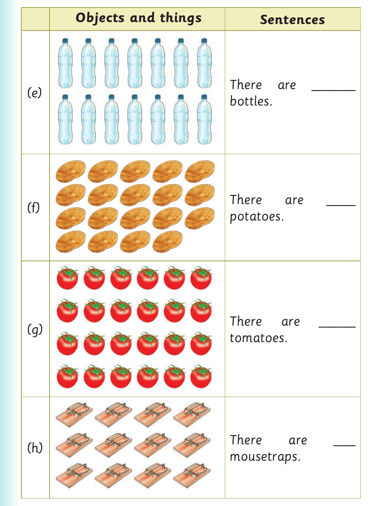

Counting objects and things - continued

Objects and things Sentences There are ______ (e) bottles. There are ____ (f) potatoes. There are _____ (g) tomatoes. There are ___ (h) mousetraps.

Objects and things Sentences There are ______ (e) bottles. There are ____ (f) potatoes. There are _____ (g) tomatoes. There are ___ (h) mousetraps.